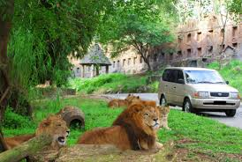
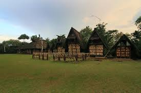

Berikut adalah tempat-tempat nya
Curug Citumang
Citumang adalah sebuah air terjun yang terletak di Desa
Bojong,
Kecamatan Parigi, Kabupaten Pangandaran, Provinsi Jawa Barat.
Sungai Citumang dikenal dengan airnya yang jernih yang
mengalir
dengan tenang melalui bebatuan di sepanjang kedua sisi
sungainya. Citumang merupakan salah satu tujuan objek wisata
alam yang populer di Pangandaran.
Jika ingin menikmati keseruan wisata arum jeram Pangandaran,
disana sudah disediakan alat rafting yang bisa para wisatawan
sewa. Alat-alat untuk body rafting banyak disediakan oleh
pihak pemandu. Selain fasilitas body rafting, di Citumang
juga dilengkapi fasilitas pendukung, selain dipandu saat
berenang,
kalian juga dapat mendokumentasikan keseruan kalian yang akan
di
dokumentasikan
oleh pemandu melalui hp kalian, mereka akan mengabadikan
setiap
keseruan melalui foto dan video.
Harga tiket masuk citumang:
Paket 1. Rp 69.000,-/orang dengan minimum
peserta bodyrafting 10 orang.
Paket 2. Rp 85.000,-/orang maka akan
mendapatkan
tambahan
layanan makan siang berupa nası liwet khas Citumang.
Hal-hal yang bisa kalian lakukan di citumang:
Terapi ikan
Tracking & Body Rafting
Dokumentasi Foto dan Video
-------------------------------------------------------------------------------------------------------------------------------------------------------------------------------
Source: Google
Taman Safari Bogor
Taman Safari ini menawarkan pengalaman unik di mana
pengunjung dapat menikmati keindahan alam sekaligus
berinteraksi langsung dengan berbagai satwa dari seluruh
dunia. Tidak hanya sebagai tempat rekreasi, Taman Safari Bogor
juga berfungsi sebagai pusat konservasi dan edukasi tentang
satwa.
Taman Safari Bogor didirikan pada tahun 1980 dan dibuka untuk
umum pada tahun 1986. Taman ini awalnya bertujuan untuk
memberikan tempat tinggal yang layak bagi satwa liar serta
memberikan kesempatan kepada masyarakat untuk melihat dan
belajar tentang berbagai jenis hewan. Seiring berjalannya
waktu, Taman Safari Bogor telah berkembang dan menjadi salah
satu tempat konservasi satwa yang penting di Indonesia.
Taman Safari Bogor tidak hanya berfokus pada hiburan, tetapi
juga pada konservasi dan edukasi. Taman ini berperan aktif
dalam berbagai program konservasi satwa langka dan terancam
punah. Mereka juga bekerja sama dengan berbagai organisasi
konservasi internasional untuk melindungi dan melestarikan
satwa liar. Program edukasi di Taman Safari Bogor bertujuan
untuk meningkatkan kesadaran masyarakat tentang pentingnya
menjaga keberlangsungan satwa dan habitat mereka.
Harga tiket masuk taman safari bogor:
Safari Siang (09.00-17.00 WIB)
Weekdays
Usia 1-5 tahun: Rp 200.000 per orang
Usia di atas 6 tahun: Rp 230.000 per
orang
Weekend
Usia 1-5 tahun: Rp 220.000 per orang
Usia di atas 6 tahun: Rp 250.000 per
orang
Safari Malam (18.30-21.00 WIB)
Usia 1-5 tahun: Rp 160.000 per orang
Usia di atas 6 tahun: Rp 180.000 per
orang
Fasilitas dan atraksi di taman safari bogor:
Safari Journey
Baby Zoo
Dokumentasi Foto dan Video
Pertunjukan Satwa
Safari Trek & Outbound
Dan lain-lain
-------------------------------------------------------------------------------------------------------------------------------------------------------------------------------

Source: Google
Kampung Budaya Sindang Barang
Menurut sejarah, Sindang Barang merupakan kerajaan
bawahan dari Prabu Siliwangi. Dahulu, daerah ini juga
terdapat keraton untuk tempat tinggal salah satu istri
Prabu Siliwangi yaitu Dewi Kentring Manik Mayang Sunda.
Saat ini, Sindang Barang telah menjelma sebagai kampung
budaya untuk melestarikan berbagai kearifan lokal dan
tradisi leluhur wilayah Jawa Barat.
Tempat ini telah menjadi pusat pertunjukkan seni dan
budaya, seperti tari tradisional, seni lukis, seni ukir,
dan kerajinan tangan. Terdapat panggung pementasan yang
menjadi ikon dari tempat wisata ini. Tidak hanya itu, di
atas panggung juga tersedia satu set gamelan tatalu yang
bisa dimainkan oleh para wisatawan yang datang.
Harga masuk Kampung Budaya Sindang Barang:
Rp 15.000,-/per orang
Hal-hal yang bisa kalian lakukan di Kampung Budaya
Sindang Barang:
Mendengar Sejarah Kerajaan Sunda
Belajar di Perpusatakaan
Trekking
Pijat
Dll
-------------------------------------------------------------------------------------------------------------------------------------------------------------------------------

Source: Google